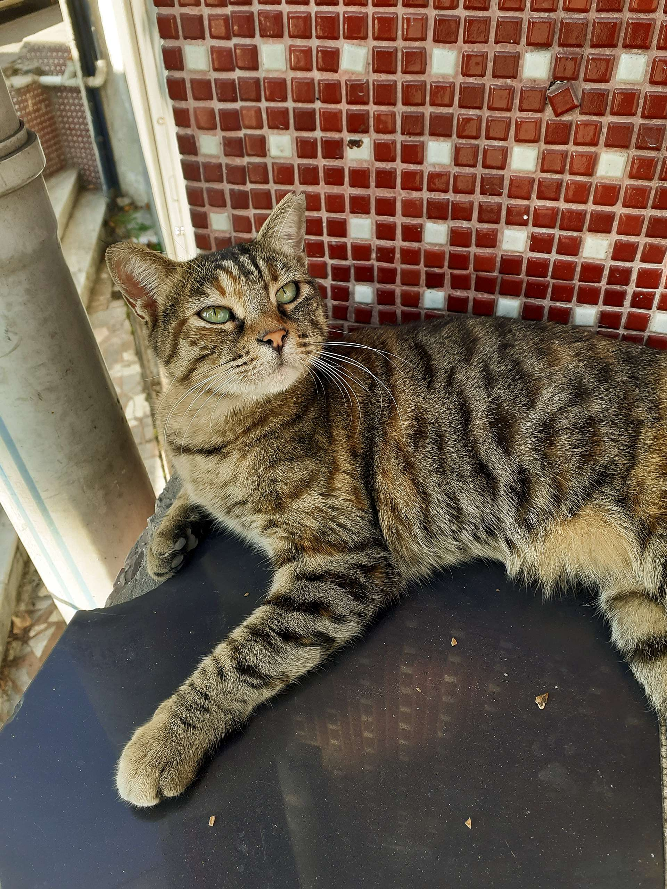
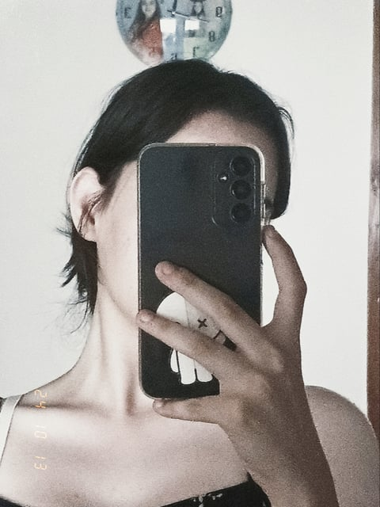

Merhaba, ben Esma. 19 yaşındayım. Aslen Giresunluyum ama doğduğumdan beri İstanbul’da yaşıyorum. Birçok şeyi severim ama en çok kedileri! O kadar çok seviyorum ki, onları fotoğraflamayı bile bir tutku hâline getirdim. 🐱
Ve işte, bu da benim kedim Prenses. O, sanki beni anlar gibi... Birine en çok ihtiyacım olduğunda yanı başımda belirdi. O günden beri onunla çok özel bir bağım var.
Müzik dinlemek de bir başka eğlencem. O kadar çok severim ki, Spotify'da yüzlerce playlistim var! Her ruh halime uygun şarkılar bulabilirim. Eğer sen de merak ediyorsan, şurada bir link var, Spotify hesabımda istediğin tarzda müzikleri bulacağına eminim.
Spotify HesabımÇoğu zaman düşünceli biriyim. Hatta bazen özgüvenim düşük olabilir, ama arkadaşım Mehmet bir gün gözlerimdeki ışığı ve güzelliği göreceğimi düşünüyor. 😌
Ä°ÅŸte bu benim… Kendimle ilgili düşündüklerim ve yaşamım hakkında birkaç parça. Umarım bu küçük hikayeyi beğenmişsindir. 💖